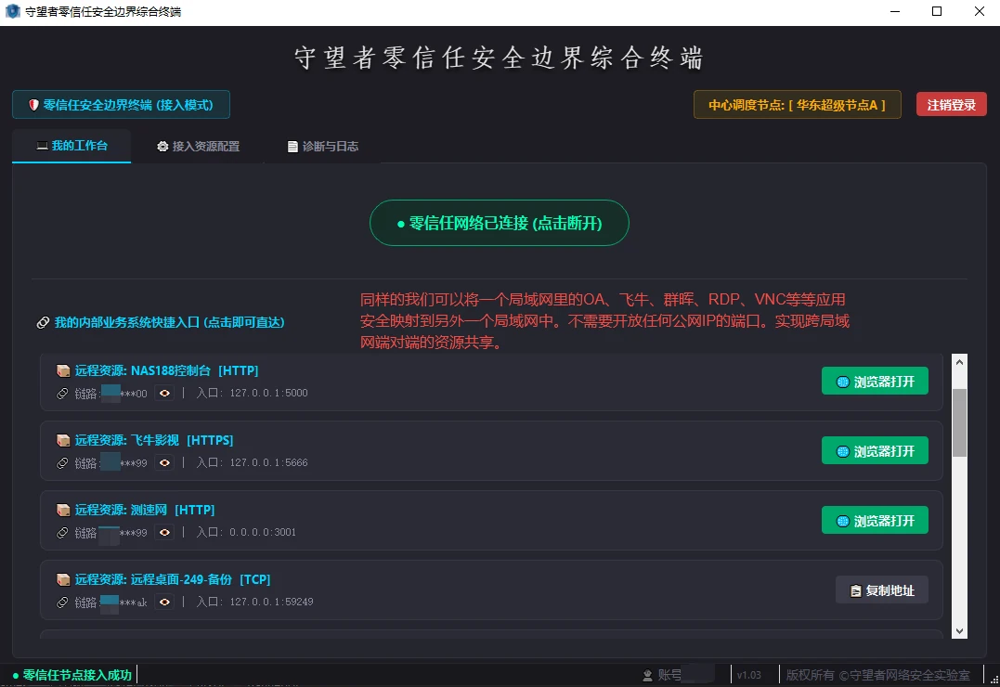

展示 v1.03 客户端的登录、发布配置、访问配置和工作台界面。图片取自用户使用说明书。
下方直接展示客户端窗口截图，点击图片放大，或打开对应的使用说明书页面。
输入终端账号及安全凭证，连接中心网关。
填写需要发布的内部 IP 和业务端口，配置资源信息。
填写 Link ID、通信口令、本地 IP、端口及协议类型。
Web 资源可由工作台快捷打开；其他 TCP 业务使用原有客户端。

多条业务规则集中管理，每项业务保留独立的接入信息。
按业务发布和授权，远程人员通过本地端口访问指定资源。